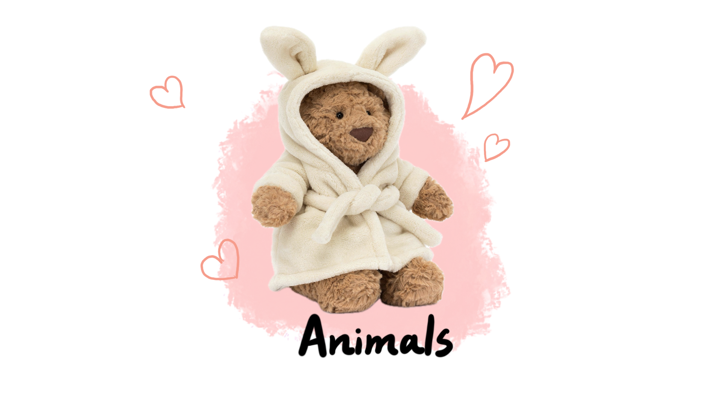
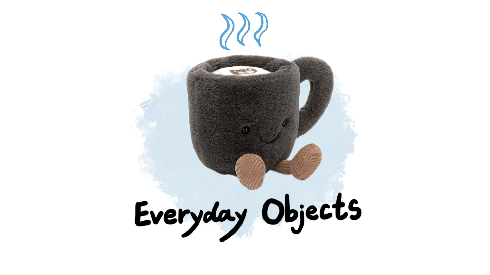
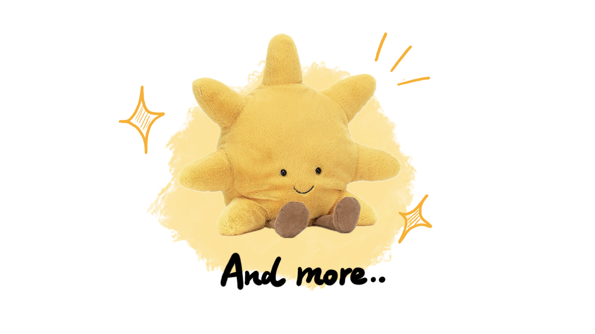
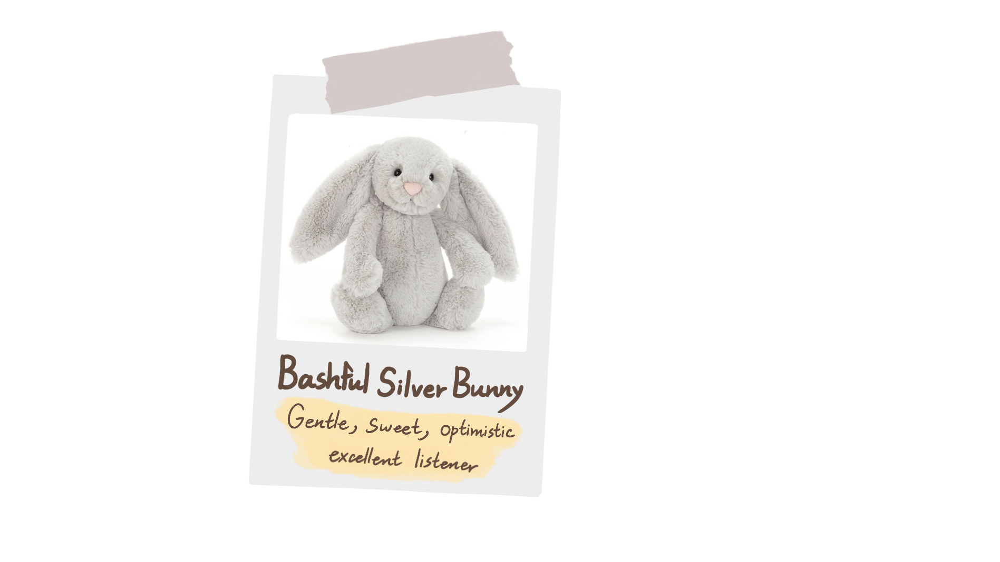
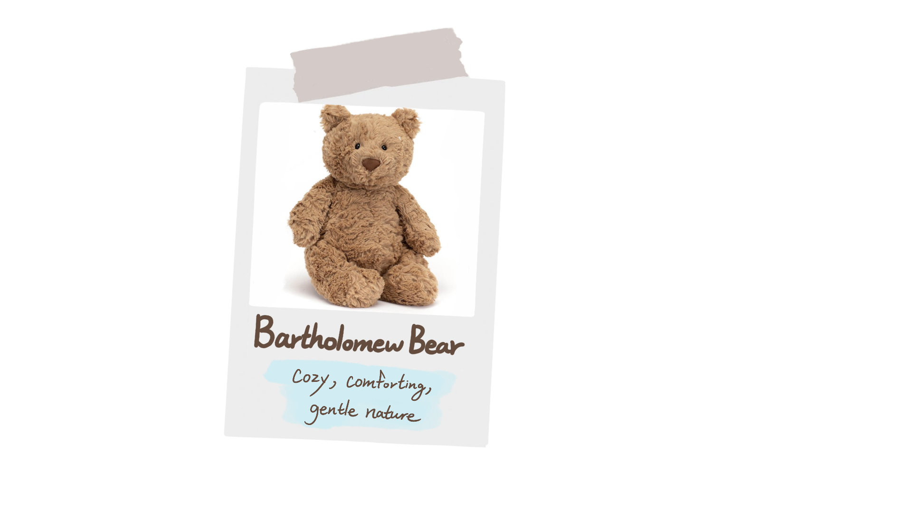
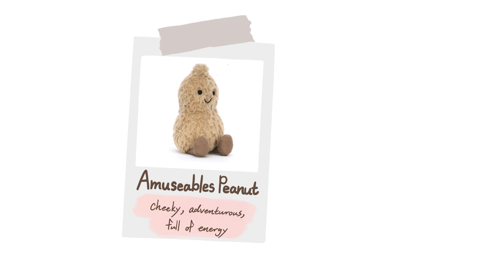

↓
Scroll down
This is an interactive story about Jellycat, comfort, loneliness, and emotional connection in modern life.
In today's fast-paced digital world, surrounded by endless information and constant change, people feel overwhelmed. With ongoing political and economic shifts, many live in uncertainty, and many experience deep-seated stress and emotional exhaustion.
Many people quietly carry stress, loneliness, and emotional fatigue.
Therefore, people silently seek solace
Something gentle enough to provide a sense of security and warmth when the world becomes unbearable.
Founded in London in 1999, Jellycat was originally designed as a comfort toy for children.
Unlike traditional plush toys, Jellycat combines soft textures with playful and unusual designs, ranging from animals to food and everyday objects.



Plush toys can act as emotional support, offering psychological comfort and a sense of security.
Their softness, familiarity, and nostalgic qualities help reduce anxiety, also stimulate childhood memories and reconnect the feeling of warmth and tranquillity.
By giving each toy a name, personality, and rich expressions, as if it had been given a human nature, this enhances the sense of connection through anthropomorphic design.
Each Jellycat has a name and a personality



Gentle textures create a calming tactile experience.
Its simple shape feels safe and recognisable.
Reconnects us with childhood warmth and memories.
Holding something soft can help reduce anxiety and bring a sense of peace.
Social media transformed Jellycat from a children’s toy into a global cultural phenomenon. Fans share collections, stories, and creative scenes online, turning Jellycat into a symbol of identity, companionship, and emotional expression. Interactive in-store experiences further strengthen emotional connection by including engaging and performing elements.
A quiet presence when people feel alone.
A way to express softness, personality, and emotional taste.
A small source of warmth when life feels uncertain.